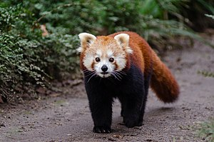

Roter Panda
Die Kleinen Pandas (Ailurus), auch Rote Pandas oder Katzenbären genannt, sind eine Säugetiergattung, die im östlichen Himalaya und im Südwesten Chinas beheimatet ist und sich vorwiegend von Bambus ernährt. Ursprünglich wurde der Gattung Ailurus mit Ailurus fulgens nur eine einzige Art zugewiesen. Molekulargenetische Untersuchungen aus dem Jahr 2020 zeigen jedoch, dass der bisher als solche eingestuften Unterart Styans Kleiner Panda Artstatus zuzubilligen ist (nunmehr Ailurus styani) und die Gattung somit zwei Arten umfasst. Mit dem Großen Panda ist die Gattung - entgegen zwischenzeitlichen Annahmen in diese Richtung - nicht näher verwandt.
Quelle: Wikipedia